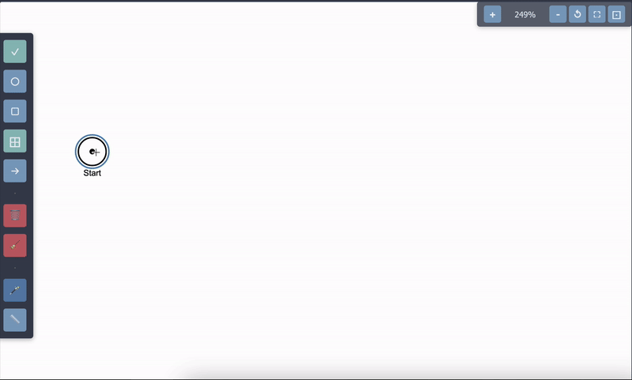

� Quick Start - Ghost Mode
💡
Ghost Mode: Select any place or transition, hold
Shift, and move your mouse to quickly create connected elements. Click to place the new element with an automatic connection.

Select an element and press shift
�🔧 Editor Tools
Click ✓
Select and move elements
Click ○
Add new places
Click □
Add new transitions
Click →
Connect elements with arcs
Click 🗑️
Delete selected element
Click 🪄
Auto-arrange all elements
⌨️ Keyboard Shortcuts
Space
Hold to enter connection mode, release to return to select mode
Shift + Move
Ghost mode: Create connected elements quickly
F / Ctrl+F
Toggle fullscreen mode
Escape
Exit fullscreen mode
🖱️ Mouse Controls
Left Click
Select, place, or connect elements
Left Drag
Move selected elements
Middle Click
Pan the canvas
Scroll Wheel
Zoom in and out
Alt/Cmd + Drag
Pan the canvas
⚡ Advanced Features
🔗
Quick Connect: Press C to instantly switch to connection mode. Release C to return to your previous tool.
📏
Grid Snapping: Use the grid button (📏) to enable snap-to-grid for precise element placement.
🎯 Simulation Controls
Step
Fire one enabled transition and capture initial state if first simulation step
Auto Run
Continuously fire transitions automatically and capture initial state if first run
Reset
Reset simulation to the captured initial state (tokens and data variables)
Fire Button
Fire a specific transition (appears when transition is selected)